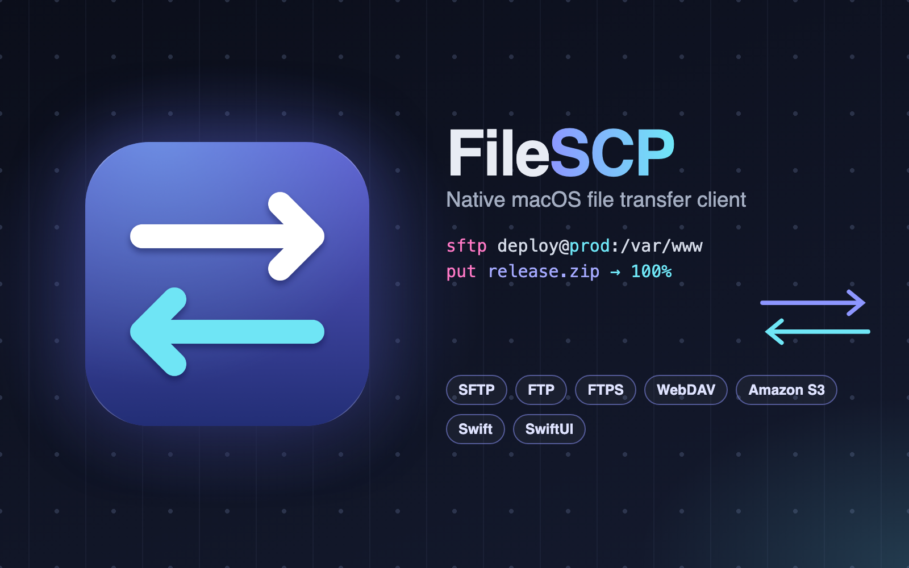
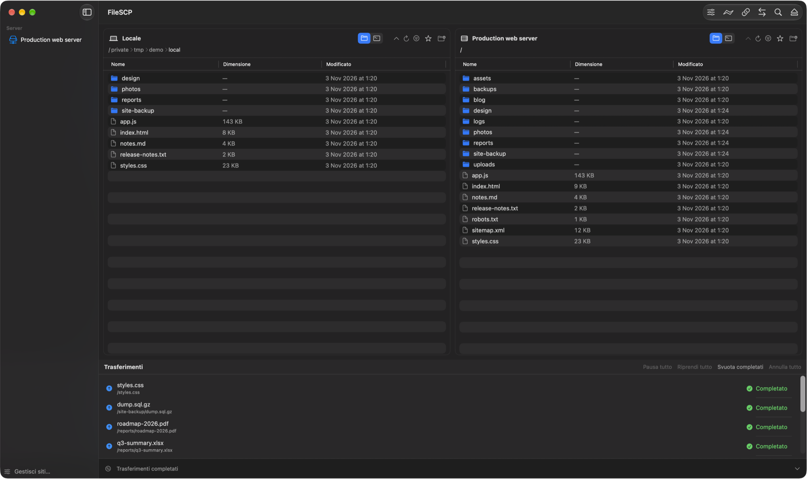
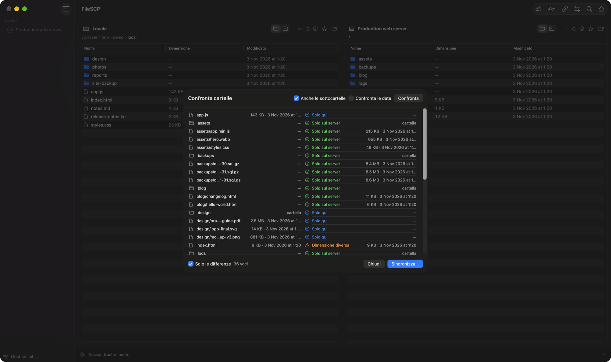
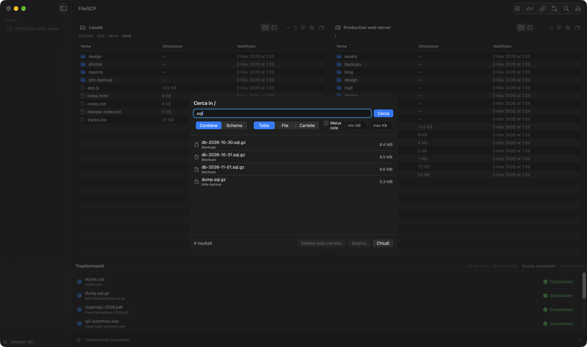

A native macOS file transfer client with two-pane browsing, SFTP, FTP/FTPS, WebDAV and S3, a resumable transfer queue, folder sync and a built-in terminal.
FileSCP is a file transfer client for macOS that brings the power of FileZilla to a modern, Apple-style interface: clean panels, translucent materials, automatic light and dark themes and discreet animations.
Your computer sits on the left and the server on the right. Files move between the two with a drag, and every transfer goes through a queue that runs several uploads and downloads in parallel, shows progress and keeps going after an interruption. The same window connects to classic FTP and FTPS servers, to SFTP over SSH, to WebDAV shares and to Amazon S3 or compatible storage.
Make moving files feel as natural as using the Finder, while keeping the safety and control of a professional tool: nothing is ever overwritten silently.

Each pane can be shown as a familiar Finder-like list or as a terminal: a real local shell, an SSH session on the server, or a command line for FTP servers that do not offer a shell. A sidebar keeps favourite and recent servers one click away.
Transfers are collected in a panel below the panes, with per-file status, pause, resume and cancel. Progress also appears on the Dock icon, and a notification tells you when a batch is done.
A folder comparison lists everything that exists only locally, only on the server or differs in size or date. From that list a synchronisation plan is built, which can be reviewed before it runs: choose the direction, decide whether to remove what no longer exists on the other side, then execute.
Because every step is shown first, keeping a website or a backup folder aligned becomes a controlled, repeatable operation.


Looking for a file on a large server does not mean opening folder after folder: a search by name or pattern walks the remote tree and lists the matches, ready to reveal in their folder or download.
When a command line is faster, the pane switches to a terminal that talks to the server directly.
FileSCP is written entirely in Swift. The protocol clients, the transfer queue, synchronisation and security logic live in a core library that knows nothing about the interface, while the app on top is built with SwiftUI. This split keeps the user interface light and lets every protocol be verified against small servers started on the fly for FTP, FTPS, SFTP, WebDAV, S3 and proxies.
The app runs outside the sandbox on purpose, so that it can offer a real terminal and free access to the disk, and it relies on two open-source components for the SSH layer and the terminal emulator.
Whole codebase, with modern concurrency for parallel transfers.
Panes, sheets, site manager and transfer panel.
Secure transfers over SSH with key authentication.
Plain, explicit and implicit TLS connections with resume.